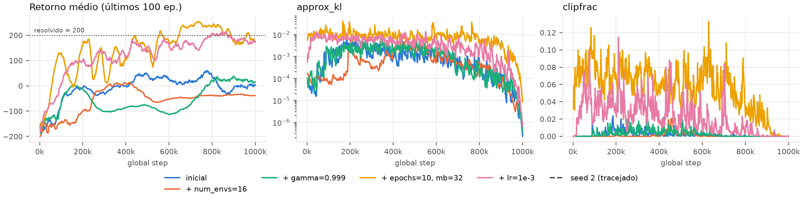
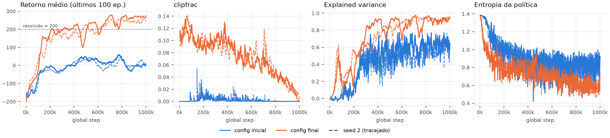
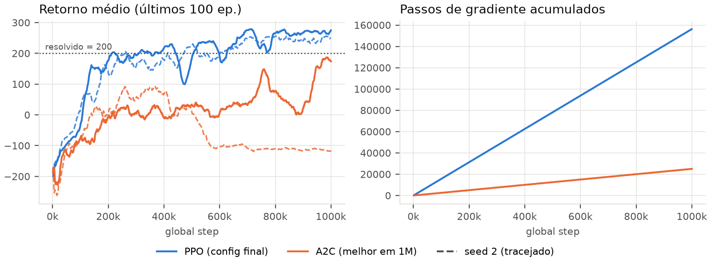
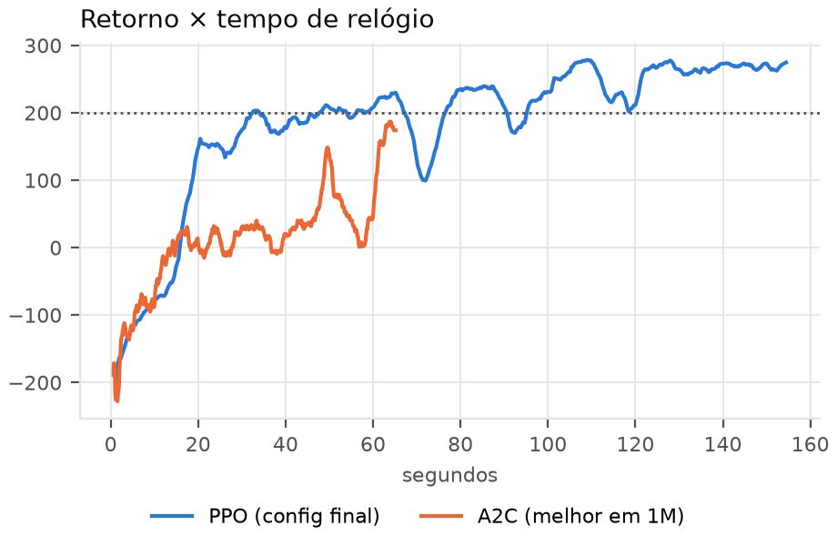

1. Generalized Advantage Estimation — GAE (algorithms/ppo.py): Acumulação recursiva retroativa δt = rt + γ(1 − dt+1)V(st+1) − V(st) e Ât = δt + γλ(1 − dt+1)Ât+1, fornecendo alvos de regressão Rt = Ât + V(st). Obedece rigorosamente à convenção do CleanRL onde dones[t+1] sinaliza o término entre os passos t e t+1.
2. Perda de Política Clipada Pessimista: Minimização da perda substituta Lπ = −1⁄B ∑ min(riAi, clip(ri, 1±ε)Ai), onde ri = exp(log πnew − log πold) e as vantagens normalizadas são desconectadas do grafo computacional.
3. Diagnósticos Estocásticos (KL & Clipfrac): Estimador não-negativo de baixa variância k3 = ((r − 1) − log r) para divergência KL e fração de amostragem clipada (|r − 1| > ε), avaliados sob no_grad.
Configuração Base: configs/ppo_lunarlander.yml (parâmetros do CleanRL derivados do CartPole: 4 ambientes, n=128, lr=2,5×10−4, 4 épocas, 4 minibatches, ε=0,2).
Critério de Resolução: Retorno médio dos últimos 100 episódios ≥ 200 e avaliação greedy determinística de 10 episódios ≥ 200 em 2 seeds independentes dentro de no máximo 2M passos.
Eficiência Amostral: O ambiente foi resolvido com apenas 1 milhão de passos (50% do orçamento permitido). Retorno final computado sobre os últimos 30% estáveis do treinamento. Taxas de SPS medidas em isolamento.
A configuração padrão atinge retorno final medíocre de apenas 9,5 e 9,1 (eval 9,1 e −34,6). As métricas diagnósticas revelam o gargalo: o KL aproximado mediano é de ínfimos 0,0003 e a fração clipada (clipfrac) é exatamente 0,000. Isso demonstra que o clipping jamais atuou e a política praticamente não se moveu durante as 4 épocas. Como o crítico apresenta variância explicada razoável (0,60) e a entropia mantém-se saudável (0,81), não há instabilidade numérica: o algoritmo sofre de subaproveitamento amostral extremo, descartando cada lote intacto.

approx_kl e fração de clipping clipfrac. Apenas intervenções que ativam o clipping destravam o retorno.| Intervenção Paramétrica Isolada | Retorno Final | Eval Greedy | Approx KL | Clipfrac | Lote (N×n) | Atualizações | SPS | Run ID |
|---|---|---|---|---|---|---|---|---|
| Configuração Inicial (Baseline) | 9,5 | 9,1 | 0,0003 | 0,000 | 512 | 31.248 | 9.858 | rp5mfsrh |
| num_envs: 4 → 16 | −38,1 | −23,3 | 0,0002 | 0,000 | 2.048 | 7.808 | 20.650 | 2ph6ewcc |
| gamma: 0,99 → 0,999 | 6,9 | −4,8 | 0,0005 | 0,000 | 512 | 31.248 | 8.973 | b2e3xcug |
| update_epochs: 4 → 10, num_minibatches: 4 → 32 | 213,5 | 188,4 | 0,0055 | 0,046 | 512 | 624.960 | 2.180 | gakvd2xf |
| learning_rate: 2,5×10−4 → 1,0×10−3 | 183,2 | 192,8 | 0,0027 | 0,005 | 512 | 31.248 | 10.223 | okw5vduf |
Mecanismos Bem-Sucedidos: Reuso Intensivo e Magnitude do Passo: O aumento para 10 épocas e 32 minibatches (minibatch efetivo de 16 transições) ataca frontalmente o subaproveitamento diagnosticado. O reuso intensivo eleva o approx_kl para 0,0055 e tira o clipfrac do zero para 0,046, fazendo o retorno saltar espetacularmente de 9,5 para 213,5 (resolvendo o ambiente em 1 seed). A contrapartida física é a sobrecarga computacional: 625k passos de gradiente derrubam o SPS de 9.858 para 2.180. Paralelamente, quadruplicar a taxa de aprendizado (lr = 1×10−3) atinge retorno de 183,2 com SPS intacto (10.223), confirmando que a política original operava sob passos excessivamente conservadores (KL de 0,0027 ainda bem abaixo do limite seguro usual de 0,01).
Validação pelas Falhas Observadas: As intervenções isoladas que fracassaram corroboram o diagnóstico com precisão: expandir num_envs=16 isoladamente piorou o retorno (−38,1) porque ampliou o lote para 2.048, reduzindo as atualizações para apenas 7.808 e mantendo o clipfrac zerado — agravando o subaproveitamento apesar do ganho em SPS. O ajuste de γ = 0,999 foi inócuo (6,9) porque o gargalo não era o horizonte de crédito, mas a incapacidade do gradiente de atualizar a política. Logo, apenas alterações que forçaram a política a se deslocar destravam o aprendizado.
Interação Não-Linear e Amortecimento por Paralelismo: Ao combinar diretamente as duas intervenções vencedoras (lr = 1×10−3 com 10 épocas e 32 minibatches no lote original de 512), o aprendizado ultrapassou o limiar de estabilidade: o approx_kl saltou para 0,0112 e o clipfrac explodiu para 0,142, desestabilizando a política e limitando o retorno a 120,1. A reinserção de num_envs=16 (lote de 2.048 com minibatches de 64) funcionou como estabilizador estatístico perfeito: ao amortecer o ruído do gradiente, reconduziu o KL para a faixa ideal (0,0072) e o clipfrac para 0,070, enquanto a vetorização recuperou o SPS para 5.800+.
| Parâmetro do Config | Valor Inicial | Valor Final | Motivo Observado nos Gráficos | Consequência Empírica |
|---|---|---|---|---|
ppo.learning_rate |
2,5×10−4 | 1,0×10−3 | approx_kl ~3e-4 indicava passos excessivamente tímidos |
Acelera progressão de retorno sem violar estabilidade |
ppo.update_epochs |
4 | 10 | clipfrac = 0,000 comprovava rollouts subaproveitados |
Multiplica gradientes por lote e induz exploração assertiva |
ppo.num_minibatches |
4 | 32 | Tamanho de minibatch de 64 transições (2.048 / 32) | Eleva atualizações por época sem sobrecarregar memória |
num_envs |
4 | 16 | Com as mudanças acima, KL inflou a 0,0112 (instabilidade) | Amortece variância do lote, traz KL a 0,007 e triplica SPS |

| Configuração | Retorno Final (s1 / s2) | Eval Greedy (s1 / s2) | Approx KL | Clipfrac | Explained Variance | Entropia Final | Run IDs (s1, s2) |
|---|---|---|---|---|---|---|---|
| Configuração Inicial | 9,5 / 9,1 | 9,1 / −34,6 | 0,0003 | 0,000 | 0,63 / 0,57 | 0,82 / 0,80 | rp5mfsrh, ueibrj4b |
| Configuração Final (PPO) | 259,1 / 245,7 | 263,5 / 281,3 | 0,0072 | 0,070 | 0,90 / 0,93 | 0,61 / 0,60 | ugdsi19k, k50jt38r |
O ambiente é oficialmente resolvido em ambas as seeds com apenas 1 milhão de passos de ambiente (metade do teto estabelecido): o retorno médio atinge 259,1 e 245,7, e a avaliação greedy consolida 263,5 e 281,3 (ambos substancialmente acima do limiar de 200). A variabilidade estocástica entre as sementes é desprezível (diferença de apenas 13 pontos de retorno), evidenciando convergência sólida e replicável.
Efeitos Sistêmicos no Crítico e na Política: O ganho da configuração final repercute em toda a dinâmica do aprendizado:
1. Otimização Cruzada do Crítico (Explained Variance): A variância explicada da função de valor salta de ~0,60 para 0,90–0,93. As 10 épocas de mini-batch não beneficiam apenas o ator; a cabeça de valor realiza 320 ajustes por rollout, aproximando a estimativa de V(s) do retorno empírico de Monte Carlo suavizado pelo GAE. Um crítico com EV superior a 90% fornece vantagens desprovidas de viés sistemático, viabilizando gradientes limpos para a política.
2. Compressão Entrópica e Domínio do Pouso: A entropia de Shannon da política decai de 0,81 para 0,60–0,61 (em relação ao teto uniforme de ln 4 ≈ 1,386). Ao contrário do A2C sem baseline (onde a entropia colapsava precocemente para 0,004), no PPO a queda é gradual e controlada, indicando que a rede abandonou o ruído de queima aleatória de combustível e convergiu para manobras determinísticas de pouso suave na zona demarcada pelas bandeiras.
Baseline de Controle (A2C): O A2C utilizado parte rigorosamente da implementação desenvolvida na Atividade 06. Em 1M passos, a melhor configuração empírica foi o baseline direto do CartPole (lr = 7×10−4, n=5, 8 ambientes; retorno 82,1 / −112,4 e eval 201,6 / −118,9). Variantes projetadas para orçamentos longos (n=32 ou 64) colapsaram (−39 a −104) porque realizavam pouquíssimas atualizações em 1M passos.


| Algoritmo | Retorno Final (s1 / s2) | Eval Greedy (s1 / s2) | Passos p/ 0 | Passos p/ 100 | Passos p/ 200 | Updates Acumulados | SPS Isolado | Tempo (1M passos) |
|---|---|---|---|---|---|---|---|---|
| PPO (Config Final) | 259,1 / 245,7 | 263,5 / 281,3 | 106k / 92k | 127k / 168k | 211k / 258k | 156.160 | 7.184 | 143 s |
| A2C (Melhor em 1M) | 82,1 / −112,4 | 201,6 / −118,9 | 214k / 138k | 744k / Nunca | Nunca | 25.000 | 21.787 | 49 s |
1. Eficiência Amostral (Passos de Ambiente): O PPO demonstra superioridade esmagadora. Ele atinge retorno 0 em ~100k passos, retorno 100 em ~145k e cruza o limiar de resolução (200) em apenas 211k e 258k passos. O A2C leva 214k passos apenas para alcançar retorno zero, atinge 100 somente na seed 1 aos 744k passos (3,5× mais passos do que o PPO precisou para resolver a tarefa) e jamais atinge retorno 200 em nenhuma das sementes. No ponto em que o PPO resolve o ambiente (¼ do treino), o A2C ainda luta para evitar quedas imediatas.
2. Tempo de Relógio vs. Frequência de Otimização: Por passo bruto de ambiente, o A2C é aproximadamente 3× mais rápido (21.787 SPS vs 7.184 SPS), concluindo 1M passos em 49 s contra 143 s. O gráfico de num_updates elucida a causa: o A2C executa estritamente 1 passo de gradiente por rollout (totalizando 25.000 atualizações), enquanto o PPO realiza 320 atualizações por rollout (10 épocas × 32 minibatches), acumulando 156.160 atualizações. Contudo, ao analisar a curva de retorno por tempo de relógio (Fig. 4), o PPO resolve o LunarLander em apenas 30 segundos de execução — muito antes de o A2C terminar seus 49 segundos sem convergir. Logo, mesmo no eixo cronológico absoluto, o PPO é superior.
3. Orçamento Fixo de Passos vs. Tempo: Sob orçamento fixo de passos (1M), a vantagem do PPO é absoluta (259 vs 82/−112). Sob orçamento fixo de tempo (ex: 60 s), o PPO igualmente vence, pois estabiliza em >200 na metade desse tempo. Se o ambiente possuísse física complexa de simulação (onde coletar passos é o gargalo dominante de tempo), a vantagem computacional do PPO cresceria ainda mais, já que o custo de reuso da rede neural torna-se desprezível perante a simulação.
4. Estabilidade Estocástica Inter-Seed: As duas seeds do PPO convergem para retornos quase idênticos (259 e 246, variação de apenas 13 pontos), exibindo recuperação imediata de pequenas oscilações. Já o A2C apresenta dispersão catastrófica de 194 pontos entre seeds (82 vs −112): na seed 2, o A2C sobe até +90 aos 250k passos e depois sofre colapso irreversível para −116, incapaz de restabelecer o equilíbrio.
5. Mecanismo Físico das Quatro Inovações do PPO: As diferenças observadas decorrem diretamente das quatro alterações algorítmicas:
(i) Reuso de Amostras: Permite extrair 6,2× mais passos de gradiente do mesmo lote de dados, sendo o motor primordial da eficiência amostral;
(ii) Razão de Probabilidades & (iii) Clipping Pessimista: Atuam como freio trust-region imprescindível. O clipfrac ativo em 7,0% das transições impede passos desmedidos decorrentes das 10 épocas de otimização, eliminando as quedas catastróficas que destroem o A2C;
(iv) GAE (λ = 0,95): Fornece vantagens com variância reduzida e viés controlado, alavancando a explained_variance do crítico para >90% e gerando o sinal estável necessário para sustentar múltiplas épocas de aprendizado.